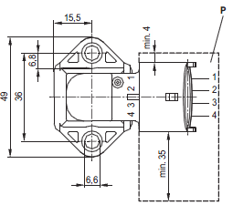
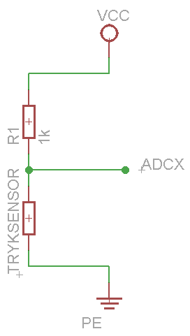

(Under)tryk (0 261 230 037)
Data:
Måler 0,2 til 1,05 bar
Pinout:
Connector-pin assignment:
- Pin 1 US (VCC 5 V)
- Pin 2 GND
- Pin 3 SIG

-->
Opkobling:

Kalibreringsfunktion:
y = (0.00369 * adc + 0.144) * 1000 [mBar] //Lavet ud fra graf i datablad
y = (0.00391 * adc2 + 0.12) * 1000 [mBar] //lavet ud fra upræcise data fra datablad
y = (0.256 * adc2 + 937.632) [mBar] //lavet ud fra vejrstation